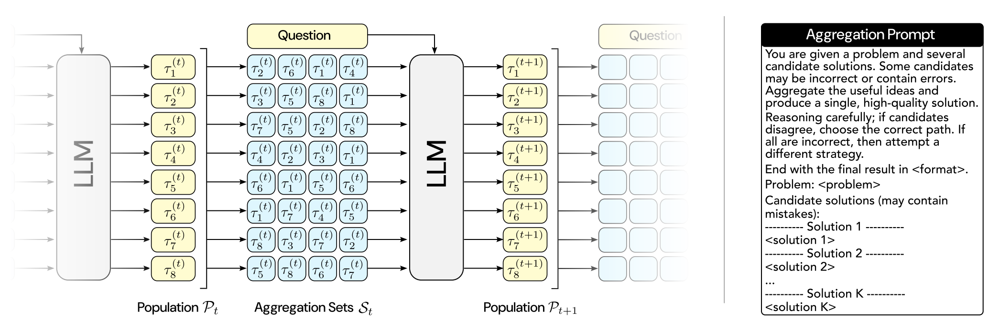
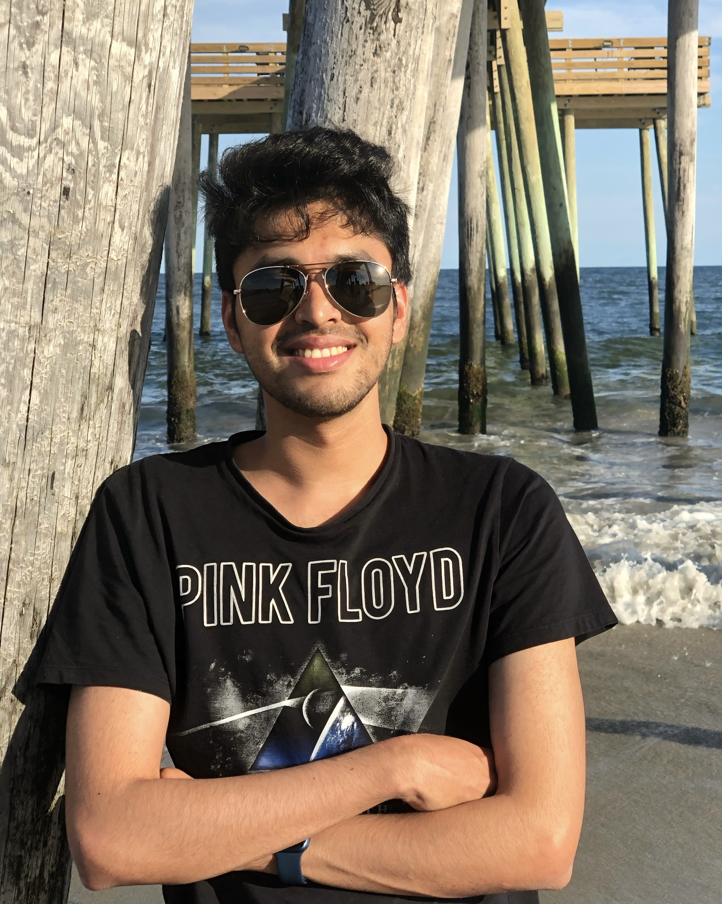
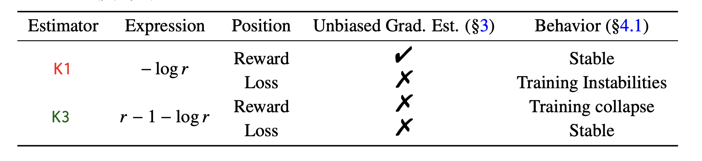
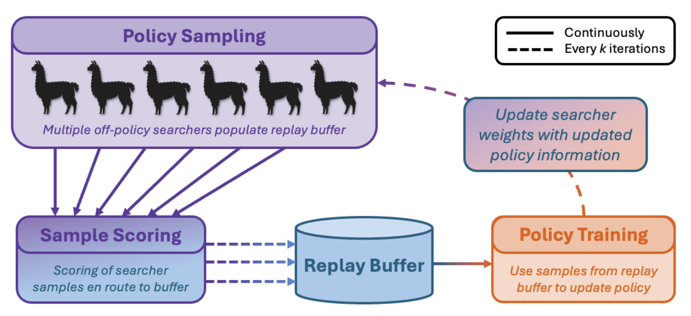
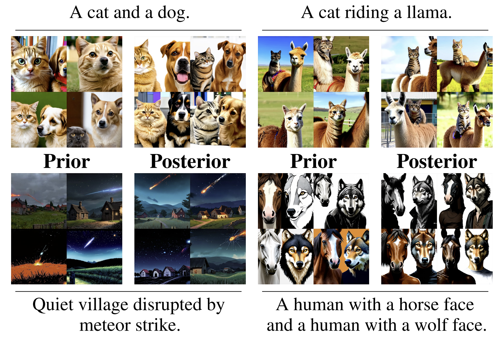

PhD Student · Mila, Quebec AI Institute · Université de Montréal
I am co-supervised by Glen Berseth and Nikolay Malkin. I closely work with Yoshua Bengio and am an academic collaborator at LawZero helping develop safe and controllable AI systems. I also collaborate with LLNL on scaling off-policy RL for large reasoning models. I recently finished an internship at Valence Labs training flow bridges for molecular systems.
I believe we are close to recursive self-improvement. My work focuses on LLM post-training and inference scaling, with a broader background in RL for generative models. Right now I'm most excited about test-time scaling, self-improvement, and compaction: getting models to reason deeper, bootstrap their own abilities, and distill all of that into fast, cheap inference. If you're working on making models smarter, let's talk.




